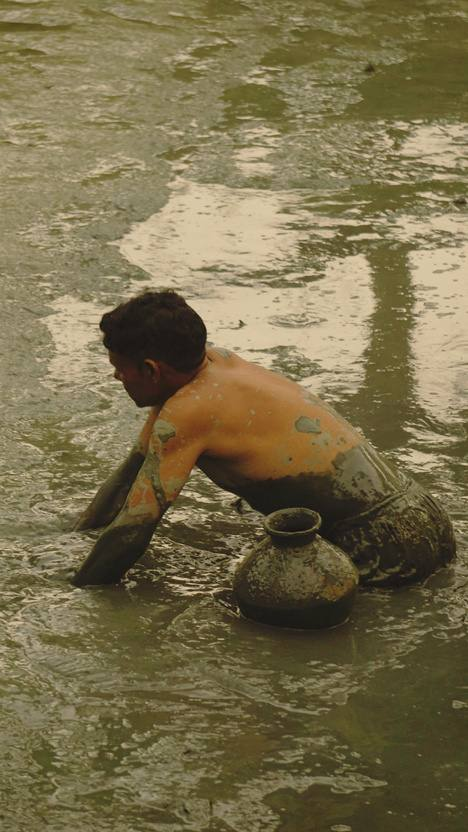

01 · Our core service
Aquaculture technical support: Doctor-on-Call
Round-the-clock diagnostic and advisory support connecting farmers directly with our aquaculture experts. Our physical-and-digital (“phygital”) health management system comes straight to your pond, so problems are caught early and losses are prevented before they happen.
- Rapid water testing
- Soil analysis
- Fish disease diagnosis